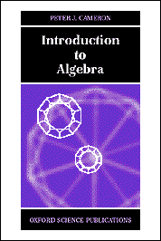

|  |
This page contains supporting material for the textbook Introduction to Algebra, by Peter J. Cameron, published by Oxford University Press in April 1998. The ISBNs for the book are
This site will contain solutions to the exercises, further material, problems, corrections, and links to other sites of interest to algebraists. |
By Plamen Koshlukov in Zentralblatt für Mathematik:
… a very good textbook in Algebra … The lecturers who are going to decide to use this book for their classes will make a good choice; they and their students will benefit a lot from this book.
Here is a much shorter proof that the commutativity of addition follows from the other axioms in a ring with identity (Exercise 2.7).
Expand (1+1)(x+y) in two different ways:
The PDF files below give the solutions to all the exercises in Chapters 1-3. Others will be added.
A list of corrections is available. Please send me reports of misprints (an email link is given below).
Prove that there is no simple group of order 33.7.13.409.
1. Here is a picture of Muhammad Al-Khwarizmi, who gave us the word "Algebra".
2. Can you explain what the following is about?
Curiously enough, the twelve-tone system has no zero in it. Given a series: 3, 5, 2, 7, 10, 8, 11, 9, 1, 6, 4, 12 and the plan of obtaining its inversion by numbers which when added to the corresponding ones of the original series will give 12, one obtains 9, 7, 10, 5, 2, 4, 1, 3, 11, 6, 8 and 12. For in this system 12 plus 12 equals 12. There is not enough of zero in it.John Cage, "Eric Satie", in Silence: Lectures and Writings, Calder and Boyars, 1968.
3. Hermann Weyl on Proposition 2.12(c), the statement that (ST)−1=T−1S−1:
With this rule, although perhaps not with its mathematical expression, you are all familiar. When you dress, it is not immaterial in which order you perform the operations; and when in dressing you start with the shirt and end up with the coat, then in undressing you observe the opposite order; first take off the coat and the shirt comes last.Hermann Weyl, Symmetry, Princeton University Press, 1952.
GAP is a system for computation with algebraic structures including groups and rings.
Peter J. Cameron
19 September 2019
{kind=link}